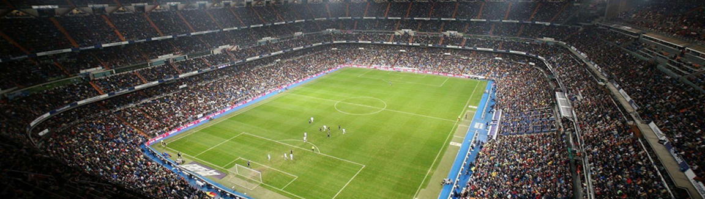

Santiago Bernabue
- Madrid - Spain.
- 81,044 spectators.
- Second biggest Stadium in Spain.
Santiago Bernabéu: The Legendary Home of Real Madrid
Santiago Bernabéu, located in Madrid, Spain, is the iconic home stadium of one of the world's most successful football clubs, Real Madrid. With its rich history, grandeur, and passionate atmosphere, it stands as a symbol of excellence, sporting prowess, and the heart of Madridismo.
A Legacy of Greatness
Santiago Bernabéu stadium has witnessed Real Madrid's glorious moments throughout its history. From domestic triumphs to capturing numerous European titles, it has been the stage for the club's achievements and the celebration of its legendary players.
A Footballing Icon
Santiago Bernabéu is not just a stadium; it is a footballing icon. Its imposing architecture, towering stands, and world-class facilities make it one of the most recognizable and revered stadiums in the world.
An Electric Atmosphere
The stadium's passionate and loyal fanbase creates an electric atmosphere during matches. The roar of the crowd, the sea of white shirts, and the iconic chants make Santiago Bernabéu an intimidating venue for visiting teams.
A Temple of Galácticos
Santiago Bernabéu has been graced by some of the greatest players in football history. From Alfredo Di Stéfano and Ferenc Puskás to Cristiano Ronaldo and Zinedine Zidane, the stadium has hosted the talents of footballing legends.
A Renowned Stage
Santiago Bernabéu has been the stage for memorable matches and historic moments. It has witnessed the drama of El Clásico clashes, thrilling comebacks, and spectacular goals, solidifying its status as a hallowed ground of football.
A Modern Spectacle
The stadium has undergone renovations to enhance the fan experience and modernize its facilities. With upgraded seating, state-of-the-art technology, and improved amenities, Santiago Bernabéu continues to evolve while preserving its historic legacy.
A Symbol of Madridismo
Santiago Bernabéu is not just a stadium for Real Madrid fans; it represents the spirit of Madridismo. It embodies the club's values, history, and the unwavering support of its passionate fanbase, making it an enduring symbol of Madrid's footballing identity.